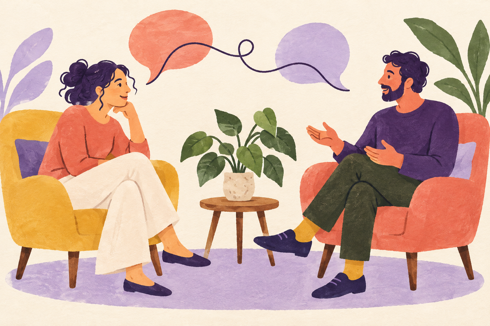

Yksilölyhytterapia
Rauhallinen keskustelu arjen kuormituksesta, muutoksista tai muusta sinulle tärkeästä. Etsimme yhdessä näkökulmia tilanteeseesi.
85 €/ 50 min
Lyhytterapiaa, ihmiseltä ihmiselle
Joskus ajatukset kulkevat solmussa. Jutellaan, ihmetellään ja etsitään yhdessä hieman väljempää reittiä.
Aloitetaan juttelusta
Mistä aloitetaan?
Olipa mielessäsi suuri muutos tai monta pientä asiaa, kaikkea ei tarvitse pohtia yksin.
Rauhallinen keskustelu arjen kuormituksesta, muutoksista tai muusta sinulle tärkeästä. Etsimme yhdessä näkökulmia tilanteeseesi.
Sama henkilökohtainen kohtaaminen videoyhteydellä. Voit osallistua omasta rauhallisesta paikastasi eri puolilta Suomea.
Kerro toiveistasi ja kysy työskentelystä. Voit tutustua rauhassa ennen ensimmäisestä tapaamisesta päättämistä.
Esimerkkihinnasto. Tapaamisten määrästä sovitaan yhdessä.
Moikka!
Aino Laine
Lyhytterapeutti
Kuvitteellinen terapeutin esittely
Ihminen toisessa tuolissa
Minulle on tärkeää, että keskustelussa on tilaa koko elämälle: vaikeille asioille, arkisille havainnoille ja välillä naurullekin.
En odota täydellistä tarinaa. Voimme aloittaa yhdestä ajatuksesta ja katsoa, mihin se johtaa. Sinun kokemuksesi ja toiveesi näyttävät suuntaa.
Kolme pientä askelta
Maksuttomassa puhelussa voit kertoa toiveistasi ja kysyä, millaista työskentely kanssani olisi.
Ensimmäisellä tapaamisella lähdemme liikkeelle siitä, mikä tuntuu sinulle tärkeältä juuri nyt.
Pohdimme yhdessä seuraavaa askelta. Voimme etsiä arkeen pieniä kokeiluja ja uusia näkökulmia.
Hyvä tietää
Alkuun saa tulla kysymysten kanssa.
Ei tarvitse. Voit aloittaa siitä, mikä juuri nyt tuntuu tärkeältä. Sanoja ja keskustelun suuntaa voidaan etsiä yhdessä.
Aluksi tutustumme ja käymme läpi työskentelyn käytännöt. Saat kertoa tilanteestasi ja toiveistasi sen verran kuin haluat. Lopuksi pohdimme yhdessä seuraavaa askelta.
Kyllä. Tämän esimerkkipalvelun tapaamiset voidaan järjestää myös videoyhteydellä. Tarvitset rauhallisen tilan, verkkoyhteyden ja laitteen, jossa on kamera ja mikrofoni.
Tässä mallissa esiteltävä lyhytterapia on keskustelutukea, eikä sitä tarjota psykoterapiana. Lopulliselle sivulle kuvataan palveluntarjoajan todellinen koulutus, osaaminen ja palvelun rajat.
Tässä voisi olla alku
Maksuton tutustumispuhelu on pieni hetki kysymyksille ja sille, mitä sinulle kuuluu.
20 minuuttia · Esimerkkipalvelu
Aino Laine
hei@pilke.example · 040 000 0000
Kuvitteelliset yhteystiedot
Esimerkkikatu 8, Helsinki
Kasvotusten ja etänä
Vastaanotto sopimuksen mukaan